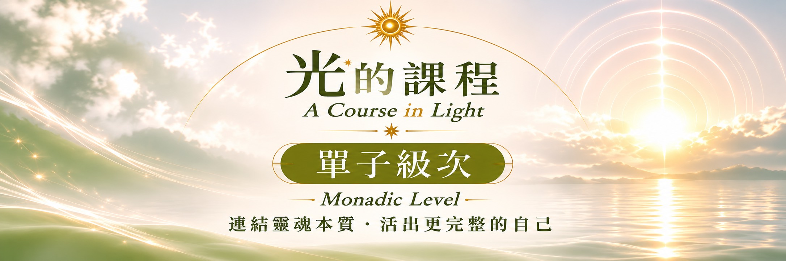

單子級次課程介紹
回歸內在本源
當我們在光的旅程中，逐漸學會認識自己、接納生命的不同面向，也開始練習從更寬廣的視角觀看人生。
單子級次以「回歸本源」，不再急著成為誰，而是在靜心與日常覺察之中，感受內在原本就存在的寧靜、完整與連結。
這不是離開現實生活，而是讓光的體驗，陪伴我們更清楚地活在每一天。
單子級次的學習重點
從內在的覺察，走向與生命更深的連結。
回到內在中心
透過靜心，練習放下外界的聲音與角色期待，辨認此刻真實的感受，與自己安靜地相處。
感受生命的完整
看見生命經驗中不同的自己，練習接納矛盾與變化，不必透過追求完美來證明自身價值。
讓光走進生活
把靜心中感受到的清明與平衡，帶進關係、選擇、工作與創造，活出更自在的日常。
不必向外尋找完整，而是重新認出自己內在的光。
單字級次核心精神
單子級次的核心精神，是從追尋轉向臨在，從分離感走向連結感。讓每一次覺察，都成為回到自己、回到生活的契機。